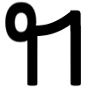

During a German class in 8th grade, the teacher was telling us how she took notes and made up a letter to be able to write notes faster in college. It was a combination of two letters, 'n' and 'g', looking similar to the Armenian letter Թ. This inspired me to also create a letter that would help me write faster. After long contemplation and doodles in the margins, my letter was born.
It represents 'the' and contains all the letters in 'the'!
Why not just use thorn (þ) or eth (ð)? Because those letters are lame in comparison to my letter, that's why. Its usage has even expanded to encompass some words that start with "th". I will use the Lau number 7 as the letter, as it resembles it the best.
The possibilities with ໗ are endless. Maybe someday we'll see this letter in the wild. Lastly, I'll give an example of ໗ in my own notes to show the true beauty of this letter.